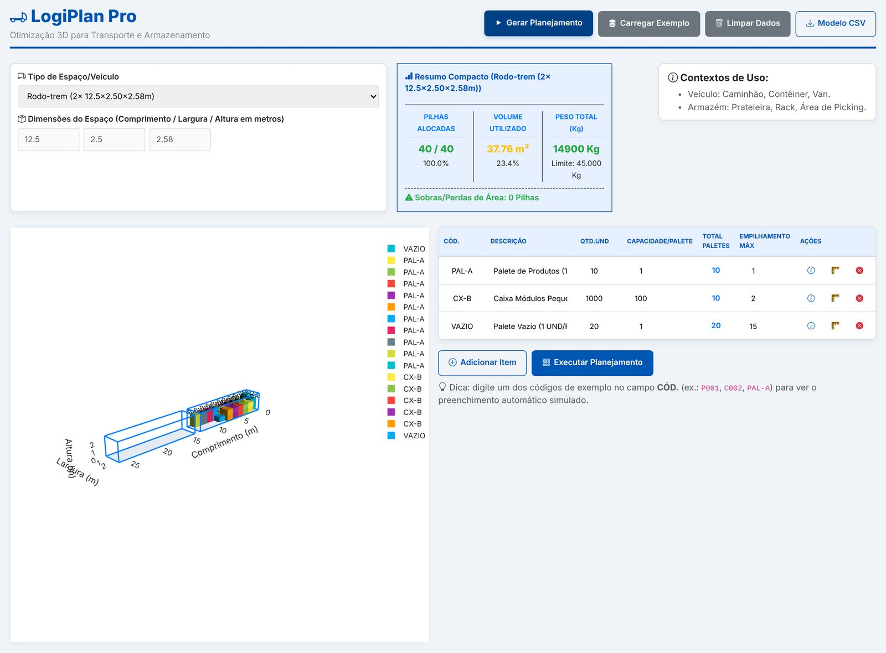
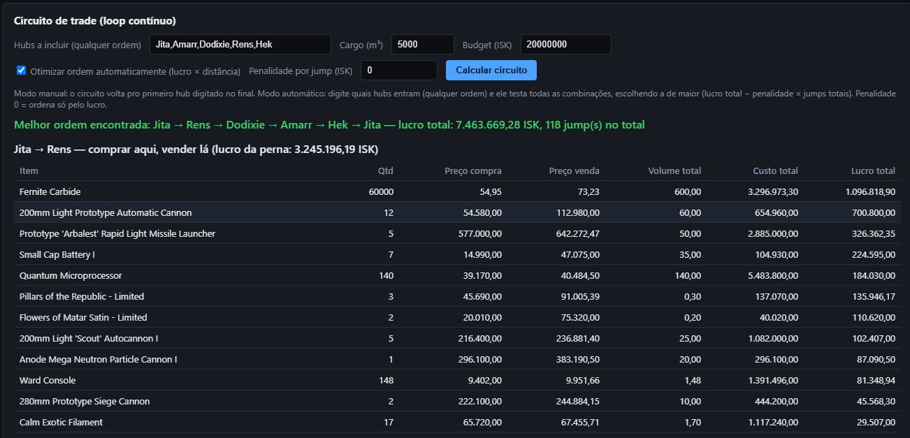

LogiPlan Pro
Simulador de carregamento e cubagem. Recebe a lista de itens, calcula pilhas, peso e ocupação do veículo ou armazém e mostra a carga em 3D, com aviso de excesso de peso.
JavaScript, Plotly.js, Bootstrap
Desenvolvedor Full Stack e Automação
Automatizo processos e integro sistemas e planilhas para áreas administrativas, financeiras, comerciais e de operação. Aberto a vagas e a projetos.
 WL
Weslley LarrozaC#/.NET, Python, JavaScript e Flutter. Itajaí, SC
WL
Weslley LarrozaC#/.NET, Python, JavaScript e Flutter. Itajaí, SC
Processos que já automatizei.
Sistemas que construí em empresas e em projetos próprios.

Simulador de carregamento e cubagem. Recebe a lista de itens, calcula pilhas, peso e ocupação do veículo ou armazém e mostra a carga em 3D, com aviso de excesso de peso.
JavaScript, Plotly.js, Bootstrap
Sistema web para uso interno da Soollar, desenvolvido em conjunto com a equipe da matriz. API REST em C# com front-end em HTML, CSS e JavaScript e integração com SQL Server. Deploy previsto nas filiais.
C# / .NET, JavaScript, SQL Server
Valida e transmite documentos fiscais em sistemas do governo, confere a tela por visão computacional para evitar falso positivo e avisa a equipe quando algo falha. Tirou do manual um processo que levava horas por lote. O código público é uma versão de demonstração, sem dados da empresa.
Python, Playwright, OpenCV, Supabase
Serviço que processa transações financeiras vindas de vários provedores por HTTP e fila. Continua correto com mensagens duplicadas, fora de ordem e várias instâncias rodando ao mesmo tempo.
TypeScript, NestJS, PostgreSQL, SQS, Docker
Consulta o status de entrega das notas fiscais nos portais de várias transportadoras e consolida tudo numa planilha do Google Sheets. O que não é encontrado vai para uma fila de conferência.
Python, Selenium, Google Sheets API

Projeto pessoal sobre o jogo EVE Online. Consome a API oficial com login OAuth, cruza o livro de ofertas de 5 mercados e resolve um problema de otimização: qual carga e qual ordem de rota dão mais lucro por volume.
Python, API REST, OAuth
Mais de 3 anos unindo infraestrutura de TI e desenvolvimento de software.
Comecei na infraestrutura de TI e passei para o desenvolvimento resolvendo os problemas que via no dia a dia das equipes.
Na Soollar, era o único técnico de TI da filial, cuidando de servidores, redes, Active Directory, telefonia e suporte. Isso me ensinou a entender o que acontece por trás de um sistema, não só a camada de código.
Ao mesmo tempo, passei a desenvolver junto com a equipe da matriz: automação fiscal com RPA, monitoramento com alertas automáticos, um app Flutter usado pela expedição e uma plataforma web interna em C#. Hoje trabalho como assistente logístico na exportação, enquanto sigo me desenvolvendo e buscando uma posição dedicada em desenvolvimento.
Brasfrigo (Grupo BMG), Itajaí
Rotina da logística de exportação: controle de entrada de cargas e acompanhamento de pedidos.
Soollar Distribuidora, Itajaí
Único técnico de TI da filial e desenvolvimento com a equipe da matriz: RPA fiscal, monitoramento, app Flutter e plataforma web em C#.
Uniasselvi
Todo setor tem uma tarefa que alguém repete toda semana copiando dado de um lugar para outro. É aí que eu entro.
Robôs e integrações que fazem o trabalho repetitivo no lugar da equipe: preencher portais, conferir documentos, juntar planilhas, gerar relatórios. Quando não existe ferramenta pronta, construo o sistema web, a API ou o app sob medida.
Relatórios que se montam sozinhos, cadastros sem digitação dupla, fluxos de aprovação no Fluig.
Validação e envio de notas fiscais, conciliação entre sistemas e acompanhamento de protocolos.
Pedidos que entram no sistema sem redigitação e painéis de acompanhamento de vendas.
Rastreamento de entregas, conferência de pedidos e cargas, simulação de carregamento.
O que uso nos sistemas e automações em produção.
Usadas em projetos pessoais, desafios técnicos e cursos.
Graduação em ADS e estudo contínuo, principalmente em IA no Azure, Python e plataformas corporativas.
A maioria pela DIO (Digital Innovation One), em trilhas preparatórias. Não são os exames oficiais da Microsoft ou do GitHub.
Procurando alguém para o seu time, ou tem um processo que toma horas da equipe toda semana? Em 20 minutos de conversa dá para saber se vale automatizar.